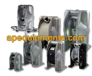
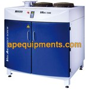

BƠM CÔNG NGHIỆP TAPFLO (THỤY ĐIỂN) Xem tất cả →

Bơm màng thân nhựa PE/PTFE
Cấu tạo nguyên khối nhựa nguyên sinh, kháng axit ăn mòn và hóa chất công nghiệp vô cùng hoàn hảo.
- Vật liệu: Nhựa PE, PTFE nguyên khối
- Lưu lượng: Đến 820 L/ph

Bơm màng đôi thân nhựa
Hai buồng bơm song song hoạt động độc lập, trộn 2 loại hóa chất với tỷ lệ vàng 1:1 siêu chuẩn.
- Trộn dung dịch 1:1 trực tiếp
- Giảm chiếm dụng không gian

Bơm bùn, nước thải Tapflo
Thiết kế van lá mở rộng cho phép tạp chất và sỏi đá lọt qua dễ dàng không gây kẹt nghẽn màng.
- Lọt hạt rắn lên tới 50mm
- Bơm bùn cực đặc hiệu quả

Bơm phuy hóa chất thân nhựa
Trang bị ống hút dài cắm thẳng vào phi 200 lít. Sang chiết dung môi, dung dịch cực kỳ an toàn.
- Dành cho phuy 200L, IBC
- Tránh tràn hóa chất nguy hiểm

Bơm màng thân kim loại
Cứng cáp, siêu chịu mài mòn cho nhà máy sơn, mực in hay tráng men. Vật liệu Gang, Nhôm, Inox 316.
- Chất liệu Inox, Gang, Nhôm
- Chịu dung dịch chứa hạt mài

Bơm màng chống cháy nổ ATEX
Khả năng triệt tiêu tĩnh điện, không gây tia lửa. Tiêu chuẩn bắt buộc ở mỏ dầu và kho dung môi dễ cháy.
- Đạt chuẩn ATEX Ex II 2G
- Cấu trúc xả tĩnh điện hoàn toàn
BƠM CHÂN KHÔNG BECKER (ĐỨC) Xem tất cả →

Bơm chân không có dầu O Series
Chuyên cho ngành thực phẩm, máy đóng gói chân không khay nhựa với bộ chống sương dầu hiệu quả.
- Hút chân không: 2.0 mbar
- Ngành bao bì, định hình

Bơm chân không vòng dầu U Series
Bơm cánh gạt ngâm dầu hạng nặng, độ hút sâu ấn tượng. Sử dụng nhiều tại máy CNC cắt gỗ, đúc kim loại.
- Áp suất sâu 0.1 mbar
- Chịu tải công nghiệp nặng

Bơm chân không không dầu VTLF
Bơm cánh gạt chạy khô sử dụng lá carbon tự bôi trơn. Xả khí cực sạch bảo vệ phòng máy in Offset.
- 100% chạy khô (Dry-running)
- Lưu lượng: Tới 500 m³/h

Bơm chân không không dầu KVT
Trang bị quạt làm mát kép và van điều áp, duy trì nhiệt độ buồng bơm ổn định chạy liên tục cả ngày dài.
- Áp suất: 100 mbar
- Tản nhiệt khí xuất sắc

Bơm chân không không dầu VT
Kiểu dáng compact lắp nối trực tiếp cực nhỏ gọn. Hoàn hảo để tích hợp cho cánh tay robot y tế, vi mạch.
- Thiết kế khối cực kỳ nhỏ gọn
- Cung cấp khí sạch chuẩn Y tế

Máy nén khí trục vít VADS
Khí nén áp lực thấp nhưng lưu lượng cực lớn. Biến tần VSD bám sát tải giúp giảm 35% hao phí dòng điện.
- Công nghệ biến tần VSD
- Áp suất xả: 1.5 – 2.5 bar